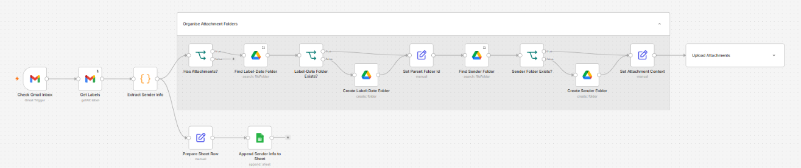
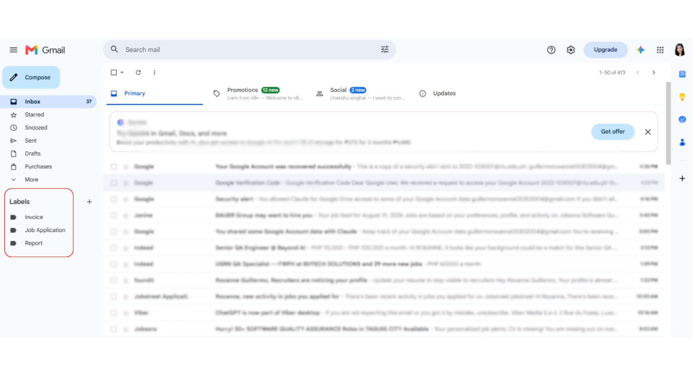
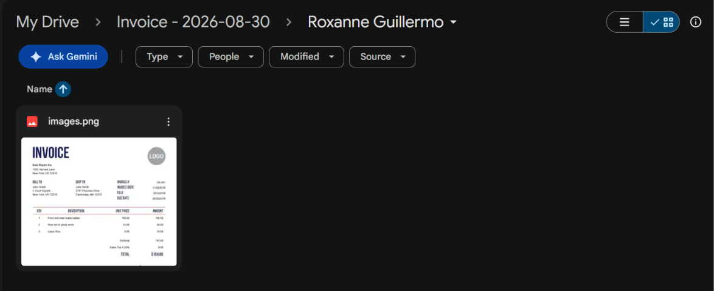

Two workflows that take manual admin off someone's plate
Built end-to-end in n8n: from receiving a message or an email, through extraction and decision logic, to organized storage anyone can find later. Below is how each one is built, why it's built that way, and the real problems that came up while shipping it.
Gmail intake: sorted by label, sender, and date
A scheduled workflow that checks a Gmail inbox every 15 minutes across several labels, logs each sender's details to a Sheet, and — when an email has attachments — saves them to Drive under a folder structure organized by label and date received, with the folder itself named after the sender, and each file keeping its original filename.
- Polls multiple Gmail labels every 15 minutes, rather than needing a separate workflow per label
- Preserves each attachment's original filename on save, instead of renaming it
- Files attachments under label > date received > a folder named for the sender, so anything can be found without searching

The complete workflow in n8n: a schedule trigger checks Gmail, extracts sender info, logs it to a Sheet, then checks for attachments and files them into the right Drive folder.

The Gmail labels the workflow watches — separate labels like Invoice and Job Application let one workflow route different categories of mail correctly.

Each matching email's sender name, email address, subject, date received, label, and message ID gets appended to this Sheet automatically.

Attachments land in Drive inside folders organized by label and the date the email was received.

Inside each label/date folder, a subfolder named after the sender keeps attachments from different people separated.

The saved file keeps its original filename exactly as it arrived — nothing gets renamed or overwritten.
The exported n8n JSON for this automation — import it directly to inspect or reuse the actual node setup.
Receipt bot: photo in, expense logged
A Telegram bot that takes a photo of a receipt and turns it into a logged expense with zero manual entry. It reads the merchant, date, and amount off the image, saves the photo into a dated Drive folder, and writes a row to a Sheet — then replies in Telegram confirming what it found, or flags it if the amount couldn't be read confidently.
- Groups receipt photos automatically into a folder named for the day they were submitted
- Flags low-confidence extractions (e.g. an unreadable amount) directly in the confirmation message instead of failing silently
- Retries transient API failures automatically before giving up
Add a caption here explaining what this screenshot shows, same as the Workflow 01 images above.